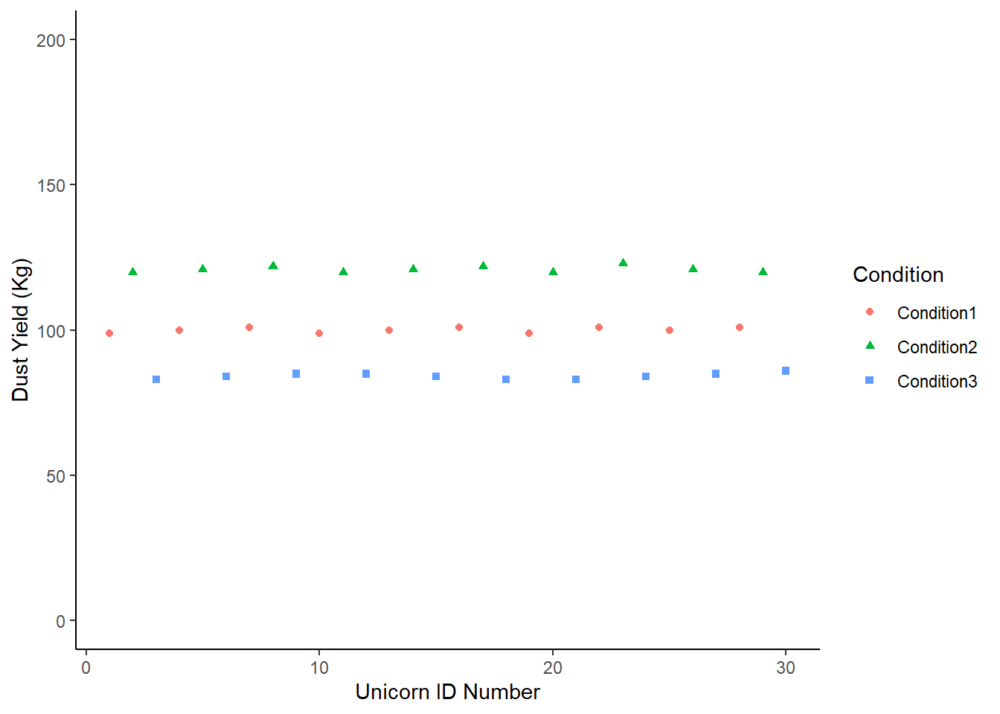
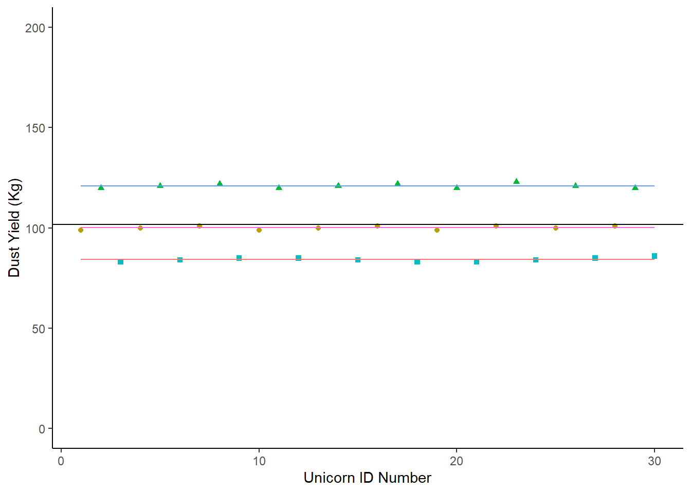

library(tidyverse)
examples <- tibble (x.perfect = c(1,2,3,4,5,6,7,8,9,10),
y.perfect = c(1,2,3,4,5,6,7,8,9,10),
x.realistic = c(1,2,3,4,4,6,8,8,9,11),
y.realistic = c(2, 2, 4, 5, 5, 5, 7, 8, 9, 9))8 Week 7: Analysing Quantitative Data
Lecture 1: Partitioning Variation
A Perfect World
examples |>
ggplot (aes(x = x.perfect, y = y.perfect))+
geom_point (shape = 8) +
scale_y_continuous(limits =c(0,10)) +
scale_x_continuous(limits = c(0,10)) +
labs (title = "100% of the variation in y is explained by x",
x = "A Perfect Explanatory Variable",
y = "A Perfect Response Variable") +
theme_classic()Our Unicorn Farm
unicorns <- tibble (NoRadio = c(150, 130, 121, 90, 98, 100, 98, 100, 113, 111),
RadioMusic = c(112, 127, 132, 150, 112, 128, 110, 120, 98, 107),
RadioDiscussion = c(75, 98, 88, 83, 83, 77, 75, 84, 93, 99)) |>
pivot_longer(cols = c(NoRadio:RadioDiscussion),
names_to = "Radio",
values_to = "DustYield")
unicorns |>
ggplot (aes (x = Radio, y = DustYield)) +
geom_point(aes(shape = Radio, colour = Radio), position = position_jitter(width = .13)) +
labs (y = "Dust Yield (Kg)", x = "Radio Condition") +
scale_color_brewer(palette = "Accent") +
scale_y_continuous(limits = c(0, 200)) +
theme_classic () +
theme(legend.position = "none") 
8.1 No Radio Group .{unnumbered}
unicorns |>
filter(Radio == "NoRadio") |>
mutate(UnicornNo = c(1,2,3,4,5,6,7,8,9,10)) |>
# The mutate function adds a new variable just to plot this one specific chart
# And then we pipe it directly into ggplot, so we're not changing the unicorns data
# Remember you can check this with `View(unicorns)`, you'll see 'UnicornNo' doesn't exist.
ggplot (aes (x = UnicornNo, y = DustYield)) +
geom_point() +
labs (y = "Dust Yield (Kg)", x = "Unicorn No") +
scale_y_continuous(limits = c(0, 200)) +
scale_x_continuous(breaks = c(0, 2, 4, 6, 8, 10)) +
theme_classic ()8.2 No Radio Mean .{unnumbered}
unicorns |>
group_by(Radio) |>
filter(Radio == "NoRadio") |>
summarise(mean = mean(DustYield))# A tibble: 1 × 2
Radio mean
<chr> <dbl>
1 NoRadio 111.unicorns |>
filter(Radio == "NoRadio") |>
mutate(UnicornNo = c(1,2,3,4,5,6,7,8,9,10)) |>
# The mutate function adds a new variable just to plot this one specific chart
# And then we pipe it directly into ggplot, so we're not changing the unicorns data
# Remember you can check this with `View(unicorns)`, you'll see 'UnicornNo' doesn't exist.
ggplot (aes (x = UnicornNo, y = DustYield)) +
geom_point() +
geom_hline(yintercept = 111.1)+
labs (y = "Dust Yield (Kg)", x = "Unicorn No") +
scale_y_continuous(limits = c(0, 200)) +
scale_x_continuous(breaks = c(0, 2, 4, 6, 8, 10)) +
theme_classic ()8.3 Deviations from the mean .{unnumbered}
unicorns |>
filter(Radio == "NoRadio") |>
mutate(Diff = DustYield-111.1)# A tibble: 10 × 3
Radio DustYield Diff
<chr> <dbl> <dbl>
1 NoRadio 150 38.9
2 NoRadio 130 18.9
3 NoRadio 121 9.9
4 NoRadio 90 -21.1
5 NoRadio 98 -13.1
6 NoRadio 100 -11.1
7 NoRadio 98 -13.1
8 NoRadio 100 -11.1
9 NoRadio 113 1.90
10 NoRadio 111 -0.100unicorns |>
filter(Radio == "NoRadio") |>
mutate(Diff = DustYield-111.1) |>
summarise(`Sum of Differences` = sum(Diff))# A tibble: 1 × 1
`Sum of Differences`
<dbl>
1 5.68e-148.4 Variance .{unnumbered}
#: eval: true
unicorns |>
group_by(Radio) |>
summarise (Variance = var(DustYield))8.5 Imaginary Scenarions .{unnumbered}
Sce1 <- tibble (Condition1 = c(99,100,101,99,100,101,99,101,100,101),
Condition2 = c(120,121,122,120,121,122,120,123,121,120),
Condition3 = c(83,84,85,85,84,83,83,84,85,86)) |>
pivot_longer (cols = c(Condition1:Condition3), names_to = "Condition", values_to = "DustYield") |>
mutate (Count = c(1:30))
Sce2 <-tibble (Condition1 = c(84,86,123,95,87,110,99,95,121,121),
Condition2 = c(83,115,85,85, 110,105,84,115,101,100),
Condition3 = c(84,122,80,80,101,83,83,99, 120,120)) |>
pivot_longer (cols = c(Condition1:Condition3), names_to = "Condition", values_to = "DustYield") |>
mutate (Count = c(1:30))
ImaginaryScenario1 <- Sce1 |>
ggplot (aes (x = Count, y = DustYield)) +
geom_point(aes(shape = Condition, colour = Condition)) +
labs (y = "Dust Yield (Kg)", x = "Unicorn ID Number") +
scale_y_continuous(limits = c(0, 200)) +
theme_classic ()
# I have also made this chart an object because we're going to update it
# It's quicker to do this as an object
# You can compare how we update this chart with how we update the ones above.
ImaginaryScenario1
experiment <- Sce2 |>
ggplot (aes (x = Count, y = DustYield)) +
geom_point(aes(shape = Condition, colour = Condition)) +
labs (y = "Dust Yield (Kg)", x = "Unicorn ID Number") +
scale_y_continuous(limits = c(0, 200)) +
theme_classic ()
experimentImaginaryScenario1 +
geom_hline(yintercept = mean(Sce1$DustYield))experiment +
geom_hline(yintercept = mean(Sce2$DustYield))ImaginaryScenario1 +
geom_hline(yintercept = mean(Sce1$DustYield)) +
geom_segment(aes(x =1, y = 100.1, xend =30, yend = 100.1, color = "red")) +
geom_segment(aes(x = 1, y = 121.0, xend = 30, yend = 121.0, color = "green")) +
geom_segment (aes(x = 1, y = 84.2, xend = 30, yend = 84.2, color = "blue")) +
theme (legend.position = "none")
experiment +
geom_hline(yintercept = mean(Sce1$DustYield)) +
geom_segment(aes(x =1, y = 102, xend =30, yend = 102, color = "red")) +
geom_segment(aes(x = 1, y = 98.3, xend = 30, yend = 98.3, color = "green")) +
geom_segment (aes(x = 1, y = 97.2, xend = 30, yend = 97.2, color = "blue")) +
theme (legend.position = "none")Sce2 |>
group_by(Condition) |>
summarise(mean = mean (DustYield))# A tibble: 3 × 2
Condition mean
<chr> <dbl>
1 Condition1 102.
2 Condition2 98.3
3 Condition3 97.28.6 MFY .{unnumbered}
MFY <- unicorns |>
mutate ("Y" = DustYield) |>
mutate ("M" = mean(Y)) |>
# If we now ask R to group the data, it will calculate the mean per group:
group_by(Radio) |>
mutate ("F" = mean(Y)) |>
# Remember to ungroup after!
ungroup()
MFY <- MFY |>
mutate (MY = (Y-M),
MF = (F-M),
FY = (Y - F))
MFY <- MFY |>
mutate (MY2 = (MY*MY),
MF2 = (MF*MF),
FY2 = (FY*FY))
MFY |>
summarise(SumSquareMY = sum(MY2),
SumSquareMF = sum(MF2),
SumSquareFY = sum(FY2))# A tibble: 1 × 3
SumSquareMY SumSquareMF SumSquareFY
<dbl> <dbl> <dbl>
1 12053. 6301. 5752.MFY |>
summarise(SumSquareMY = sum(MY2),
SumSquareMF = sum(MF2),
SumSquareFY = sum(FY2),
MeanSquareMY = sum(MY2)/29,
MeanSquareMF = sum(MF2)/2,
MeanSquareFY = sum(FY2)/27) # A tibble: 1 × 6
SumSquareMY SumSquareMF SumSquareFY MeanSquareMY MeanSquareMF MeanSquareFY
<dbl> <dbl> <dbl> <dbl> <dbl> <dbl>
1 12053. 6301. 5752. 416. 3151. 213.ANOVA <- aov(DustYield ~ Radio, data = unicorns)
summary(ANOVA) Df Sum Sq Mean Sq F value Pr(>F)
Radio 2 6301 3151 14.79 4.6e-05 ***
Residuals 27 5752 213
---
Signif. codes: 0 '***' 0.001 '**' 0.01 '*' 0.05 '.' 0.1 ' ' 1Lecture 2: Choosing a Statistical Test
library(tidyverse)
cows <- readxl::read_excel("cows.xlsx") |>
mutate(parlour = as.factor(parlour),
`housing type` = as.factor(`housing type`))
cows |>
ggplot(aes(x = `Welfare Score`, y= `Average Daily Yield`, colour = `housing type`)) +
geom_point() +
theme_classic() +
labs(x = "Welfare Score", y = "Average Daily Yield",
title = "Milk Yield versus Welfare Score",
subtitle = "For Robotic vs Manual Parlours") +
facet_wrap(facets = ~parlour, ncol = 1) +
theme(legend.position = "bottom")
Numerical Response
cows |>
summarise(mean_yield = mean(`Average Daily Yield`),
sd_yield = sd(`Average Daily Yield`))# A tibble: 1 × 2
mean_yield sd_yield
<dbl> <dbl>
1 32 3.73t.test(cows$`Average Daily Yield`, mu = 28)
One Sample t-test
data: cows$`Average Daily Yield`
t = 21.448, df = 399, p-value < 2.2e-16
alternative hypothesis: true mean is not equal to 28
95 percent confidence interval:
31.63336 32.36664
sample estimates:
mean of x
32 Numerical Response Categorical Explanatory
diet <- tibble (before = c(5.04, 4.63, 4.04, 5.10, 5.43, 4.83, 3.45, 3.49, 5.02, 4.81),
after = c( 4.78, 2.49, 4.46, 2.03, 5.13, 7.23, 3.50, 1.89, 3.30, 3.91))
diet |>
ggplot(aes(y = before)) +
geom_boxplot() +
geom_boxplot(aes(y = after, x =1)) +
theme_classic() +
scale_x_continuous(labels =c("Before Diet", "After Diet"), breaks = c(0,1)) +
labs(x = "Diet", y = "Weight (kg)")diet |>
summarise(before_mean = mean(before),
after_mean = mean(after),
before_sd = sd(before),
after_sd = sd(after))# A tibble: 1 × 4
before_mean after_mean before_sd after_sd
<dbl> <dbl> <dbl> <dbl>
1 4.58 3.87 0.689 1.62t.test(diet$before, diet$after, paired = TRUE, alternative = "two.sided")
Paired t-test
data: diet$before and diet$after
t = 1.4615, df = 9, p-value = 0.1779
alternative hypothesis: true mean difference is not equal to 0
95 percent confidence interval:
-0.3900511 1.8140511
sample estimates:
mean difference
0.712 2-Way ANOVA
model1 <- aov(`Average Daily Yield` ~ parlour + `housing type`, data = cows)
summary(model1) Df Sum Sq Mean Sq F value Pr(>F)
parlour 1 900 900.0 78.511 < 2e-16 ***
`housing type` 1 100 100.0 8.723 0.00333 **
Residuals 397 4551 11.5
---
Signif. codes: 0 '***' 0.001 '**' 0.01 '*' 0.05 '.' 0.1 ' ' 1Linear model
model2 <- lm(`Average Daily Yield` ~ parlour + `housing type`, data = cows)
summary(model2)
Call:
lm(formula = `Average Daily Yield` ~ parlour + `housing type`,
data = cows)
Residuals:
Min 1Q Median 3Q Max
-10.8651 -1.7814 0.0787 1.6805 11.7654
Coefficients:
Estimate Std. Error t value Pr(>|t|)
(Intercept) 34.0000 0.2932 115.956 < 2e-16 ***
parlourrobot -3.0000 0.3386 -8.861 < 2e-16 ***
`housing type`seasonally housed -1.0000 0.3386 -2.954 0.00333 **
---
Signif. codes: 0 '***' 0.001 '**' 0.01 '*' 0.05 '.' 0.1 ' ' 1
Residual standard error: 3.386 on 397 degrees of freedom
Multiple R-squared: 0.1801, Adjusted R-squared: 0.176
F-statistic: 43.62 on 2 and 397 DF, p-value: < 2.2e-16Numerical Response Numerical Explanatory
Correlation
cor.test(cows$`Average Daily Yield`, cows$`Welfare Score`)
Pearson's product-moment correlation
data: cows$`Average Daily Yield` and cows$`Welfare Score`
t = 1.7643, df = 398, p-value = 0.07845
alternative hypothesis: true correlation is not equal to 0
95 percent confidence interval:
-0.01004724 0.18454894
sample estimates:
cor
0.08809126 Linear Model
Genearlised Linear Model
#| eval: true
model4 <- glm(`Average Daily Yield` ~ `Welfare Score`
+ `housing type` + parlour, data = cows)
summary(model4)Categorical Response
Proportion Test
prop.test(x = 3, n = 20, p = 0.18, alternative = "two.sided")
1-sample proportions test with continuity correction
data: 3 out of 20, null probability 0.18
X-squared = 0.0033875, df = 1, p-value = 0.9536
alternative hypothesis: true p is not equal to 0.18
95 percent confidence interval:
0.03956627 0.38862512
sample estimates:
p
0.15 Categorical Response Categorical Explanatory
McNemar’s Test
work <- matrix(c(2, 5, 38, 35),
ncol=2,
byrow=TRUE,
dimnames = list(c("Dysplasia", "No Dysplasia"),
c("Before Work Season", "After Work Season")))
mcnemar.test(work)
McNemar's Chi-squared test with continuity correction
data: work
McNemar's chi-squared = 23.814, df = 1, p-value = 1.061e-06Fisher’s Exact Test
fisher.test(x = c(4,16), y = c(2,18))
Fisher's Exact Test for Count Data
data: c(4, 16) and c(2, 18)
p-value = 1
alternative hypothesis: true odds ratio is not equal to 1
95 percent confidence interval:
0.02564066 Inf
sample estimates:
odds ratio
Inf # Calculate Odds Ratio
(4+18) / (16 + 2)[1] 1.222222Chi2 Test
gsd <- matrix(c(16, 12, 84, 86),
ncol=2,
byrow=TRUE,
dimnames = list(c("Dysplasia", "No Dysplasia"),
c("Inbred", "Less Inbred")))
chisq.test(gsd)
Pearson's Chi-squared test with Yates' continuity correction
data: gsd
X-squared = 0.30714, df = 1, p-value = 0.5794library(vcd)
assocstats(gsd) X^2 df P(> X^2)
Likelihood Ratio 0.57672 1 0.44760
Pearson 0.57481 1 0.44835
Phi-Coefficient : 0.054
Contingency Coeff.: 0.054
Cramer's V : 0.054 Categorical Response Numerical Explanatory
Logistic Regression
dysp <- tibble(dysplasia = c(1, 1, 1, 1, 1, 1, 1,
0, 0, 0, 0, 0, 0, 0,
0, 0, 0, 0, 0, 0, 0),
inflammation =c(0.91, 0.79, 1.40, 0.71, 1.01, 0.77, 0.85,
0.42, 1.02, 0.31, 0.05, 1.17, 0.04, 0.36,
0.12, 0.02, 0.05, 0.42, 0.92, 0.72, 1.05))
logit <- glm(dysplasia ~ inflammation, data = dysp, family = "binomial")
summary(logit)
Call:
glm(formula = dysplasia ~ inflammation, family = "binomial",
data = dysp)
Deviance Residuals:
Min 1Q Median 3Q Max
-1.5715 -0.5727 -0.3094 1.0397 1.4914
Coefficients:
Estimate Std. Error z value Pr(>|z|)
(Intercept) -3.190 1.484 -2.150 0.0316 *
inflammation 3.488 1.740 2.004 0.0450 *
---
Signif. codes: 0 '***' 0.001 '**' 0.01 '*' 0.05 '.' 0.1 ' ' 1
(Dispersion parameter for binomial family taken to be 1)
Null deviance: 26.734 on 20 degrees of freedom
Residual deviance: 20.534 on 19 degrees of freedom
AIC: 24.534
Number of Fisher Scoring iterations: 5library(easystats)
report(logit)We fitted a logistic model (estimated using ML) to predict dysplasia with
inflammation (formula: dysplasia ~ inflammation). The model's explanatory power
is moderate (Tjur's R2 = 0.24). The model's intercept, corresponding to
inflammation = 0, is at -3.19 (95% CI [-7.09, -0.88], p = 0.032). Within this
model:
- The effect of inflammation is statistically significant and positive (beta =
3.49, 95% CI [0.65, 7.91], p = 0.045; Std. beta = 1.47, 95% CI [0.27, 3.33])
Standardized parameters were obtained by fitting the model on a standardized
version of the dataset. 95% Confidence Intervals (CIs) and p-values were
computed using a Wald z-distribution approximation.parameters(logit)Parameter | Log-Odds | SE | 95% CI | z | p
---------------------------------------------------------------
(Intercept) | -3.19 | 1.48 | [-7.09, -0.88] | -2.15 | 0.032
inflammation | 3.49 | 1.74 | [ 0.65, 7.91] | 2.00 | 0.045exp(cbind(OddsRatio = coef(logit), confint(logit))) OddsRatio 2.5 % 97.5 %
(Intercept) 0.04118154 0.0008355444 0.4146414
inflammation 32.71638289 1.9151146706 2735.6121035Parametric vs Non Parametric
Power Calculations
Assumptions
Residuals
residuals <- tibble(resids = resid(model4))
residuals |>
ggplot(aes(x = resids)) +
geom_density()+
theme_classic()
parameters::describe_distribution(residuals)